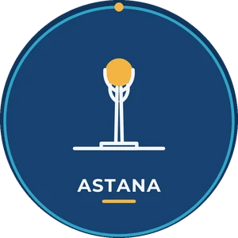
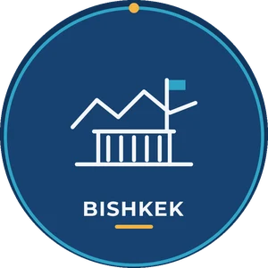
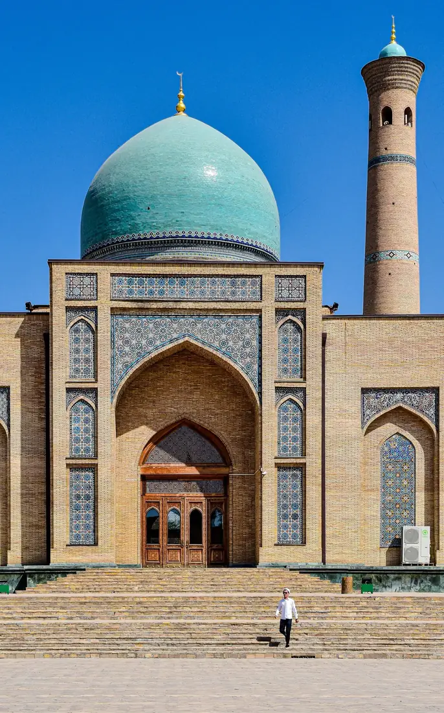

8 kun
8 kunUZ
Klassik O'zbekiston
Toshkent · Samarqand · Buxoro · Xiva
Ipak yo'lining asosiy sayohati: quyosh botishidagi Registon, qadimiy Buxoro va qal'a-shahar Xiva.
dan boshlab… 1 kishi uchun
Dasturni ko'rish →Markaziy Osiyo bo'ylab shaxsiy va kichik guruh turlari — feruza gumbazlar, cho'ldagi o'tovlar, tog' ko'llari va samimiy mehmondo'stlik. Hammasini biz tashkil qilamiz, siz faqat sayohat qilasiz.
Markaziy Osiyoning eng go'zal joylarini bitta sayohatda birlashtiring — chegara, transport va gidlarni biz o'z zimmamizga olamiz.
Samarqand, Buxoro va Xiva — tezyurar poyezdlar bog'lagan Ipak yo'lining moviy gumbazli durdonalari.
Olmaota atrofidagi tog'lar, Charin kanyonining qizil qoyalari va muqaddas Turkiston shahri.

Alp ko'llari, ko'chmanchilar o'tovlari, cheksiz yaylovlardagi otlar va Issiqko'l sohillari.

Qadimiy Panjakent, Sirdaryo bo'yidagi Xo'jand va dunyo tomi — Pomir.
Namunaviy marshrutlar — har bir turni sanalaringiz, byudjetingiz va guruh soniga moslaymiz.
8 kunIpak yo'lining asosiy sayohati: quyosh botishidagi Registon, qadimiy Buxoro va qal'a-shahar Xiva.
 5 kun
5 kunVaqtingiz kammi? Buyuk shaharlar orasida "Afrosiyob" tezyurar poyezdida sayohat qiling.

7 kunHazrati Imom, Imom Buxoriy majmuasi, Imom Moturidiy va Bahouddin Naqshband ziyorati.
 4 kun
4 kunToza tog' havosi, feruza ko'l va cho'ldagi o'tov lagerida yulduzlar ostida bir kecha.
 12 kun
12 kunKanyonlar, alp ko'llari va ko'chmanchilar madaniyati O'zbekistonning buyuk shaharlari bilan birga.
 9 kun
9 kunSamarqanddan qadimiy Panjakentga o'ting va Tojikiston tog'lari hamda mehmondo'stligini kashf eting.
Mos tur topmadingizmi? Juftliklar, oilalar va guruhlar uchun alohida marshrut tuzib beramiz.
Joylar, tunlar soni, mehmonxona, transport va gidni tanlang — xaritada marshrut va taxminiy narxni darhol ko'ring.
Yig'ishni boshlash →


Bu faqat obidalar emas. Bu katta qozondagi palov, bozordagi tonglar va yangi do'stlar bilan choy.


Jamoamiz O'zbekistonda yashaydi va har bir ko'cha, gid va yashirin go'shani biladi.
Mehmonxona, poyezd, transfer, gid va kirish chiptalari — bitta tushunarli paketda.
Halol taomlar, namoz vaqtiga mos dastur va oilalar uchun qulay sur'at.
Ingliz va rus tilidagi gidlar; turk va arab tilida — so'rov bo'yicha.
Yashirin to'lovlarsiz — bron qilishdan oldin narxga nimalar kirishini ko'rasiz.
Butun sayohat davomida WhatsApp yoki Telegram'da jonli menejer.
Sanalar, guruh soni va istaklaringizni WhatsApp yoki Telegram'da yozing.
Guruhingiz uchun kunma-kun dastur va aniq narxni tayyorlaymiz.
Sizni aeroportda kutib olamiz, qolgan hamma ishni o'zimiz hal qilamiz.
Ko'plab davlatlar fuqarolari O'zbekiston, Qozog'iston va Qirg'izistonga vizasiz yoki oddiy elektron viza bilan kirishi mumkin. Pasportingiz qaysi davlatniki ekanini yozing — amaldagi qoidalarni tekshirib beramiz.
Shaharlar uchun bahor (aprel–iyun) va kuz (sentabr–oktabr) eng qulay vaqt. Yoz — Qirg'iziston va Tojikiston tog'lari va ko'llari mavsumi.
Ha. Juftliklar va oilalar uchun shaxsiy turlar, shuningdek guruh turlari va turagentliklar uchun dasturlar tuzamiz.
Mintaqadagi taomlarning aksariyati halol. Dasturni namoz vaqtlari va muqaddas joylar ziyoratiga moslab ham tuzishimiz mumkin.
WhatsApp yoki Telegram orqali yozing. Dasturni tasdiqlaganingizdan so'ng bronni rasmiylashtiramiz va to'lov ma'lumotlarini yuboramiz.
Ha. Agentliklar va guruhlar uchun qabul xizmati va hamkorlik narxlarini taklif qilamiz.
O'zingizga qulay aloqa usulini tanlang — g'oyalar, dastur va narxni yuboramiz.